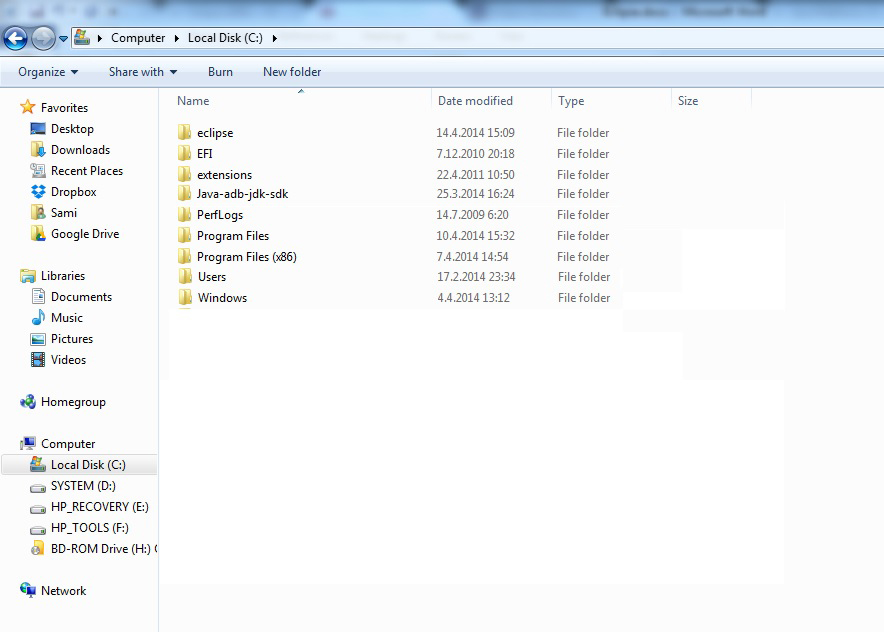

Lataus ja asennus
- Siirry osoitteeseen http://www.eclipse.org
- Paina Download Eclipse –painiketta sivun oikeasta laidasta tai Download-paniketta yläpalkista
- Eclipsestä on saatavilla useita erilaisia versioita
- Suotavin asennettava vaihtoehto Java-ohjelmointiin on Eclipse IDE for EE Developers
- Eclipse EE sisältää useampia ohjelmointirajapintoja (API), kuten RMI ja XML, joiden avulla voidaan luoda Java web-applikaatioita
- Vaadin-plugin vaatii myös toimiakseen Eclipse EE ohjelmointiympäristön
- Windows-käyttäjät voivat asentaa ohjelman suoraan tältä sivulta 32- tai 64-bittisen version oman käyttöliittymän mukaan
- Paina “Eclipse IDE for Java EE developers”
- Valitse Download Links –sivupalkista oman käyttöliittymäsi versio
- Valitse haluamasi latauslinkki tai suositeltu ensimmäinen linkki vihreän nuolen oikealta puolelta
- Lataus alkaa hetken kuluttua
- Odota, että lataus valmistuu

- Pura ladatut tiedostot
- Sovellus ei vaadi erilistä asennusta vaan käynnistyy suoraan Eclipse.exe tiedoston kautta. Siksi on suositeltavaa tallentaa puretun tiedoston sisällä oleva eclipse-kansio esimerkiksi kovalevyn juureen
- Kaksoisklikkaa Eclipse.exe tiedostoa
- Ensimmäisellä kerralla tietokone saattaa pyytää lupaa suorittaa ohjelma. Paina ”Run”

- Käynnistyksen yhteydessä määritetään workspace-kansio, mistä projektit haetaan ja minne ne luodaan
- Kansiota kysytään aina käynnistyksen yhteydessä